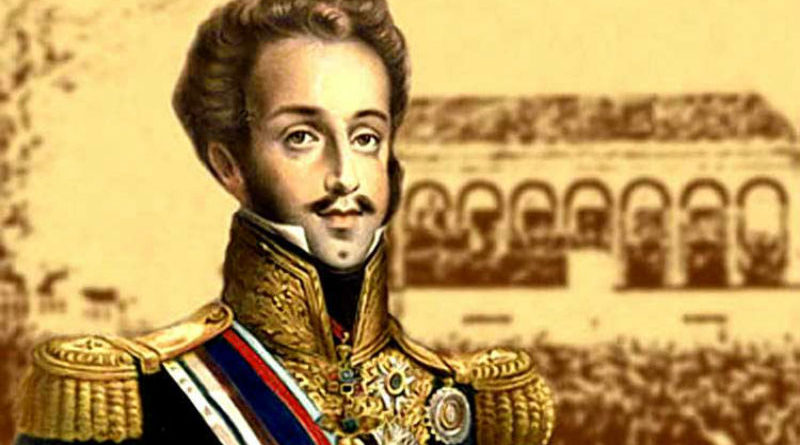

Após conquistar a independência, o Brasil transformou-se em uma monarquia e foi governado por D. Pedro I, de 1822 a 1831, em um período conhecido como Primeiro Reinado.
O Primeiro Reinado (1822-1831)
marcou os anos iniciais do Brasil como nação independente após o processo de independência ter sido conduzido por intermédio de D. Pedro I. Com esse acontecimento, o Brasil transformou-se em uma monarquia (a única da América Latina) e foi governada por D. Pedro I de maneira autoritária.
O processo de independência do Brasil foi resultado das pressões exercidas pelas cortes portuguesas sobre D. Pedro I, que se tornou regente do Brasil quando seu pai, D. João VI, retornou para Portugal em 1821. As cortes portuguesas haviam sido formadas durante a Revolução Liberal do Porto e pressionavam as autoridades reais por mudanças em Portugal.
Essas pressões sobre o regente levaram-no à liderança do processo de ruptura entre Brasil e Portugal. Assim, incentivado por D. Leopoldina e José Bonifácio, o próprio D. Pedro I declarou a independência do Brasil no dia 7 de setembro, às margens do Rio Ipiranga. Seguiu-se, então, uma guerra de independência travada em diferentes partes do Brasil, com combates de baixa intensidade.
A independência do Brasil apenas foi de fato reconhecida por Portugal em 1825, após as negociações mediadas pela Inglaterra que previam o pagamento de dois milhões de libras como indenização e a exigência de que o Brasil não reivindicasse, incentivasse ou liderasse a independência de outras colônias portuguesas.
Com a independência do Brasil, D. Pedro foi coroado imperador sob o nome de D. Pedro I. A escolha pelo regime monárquico foi explicada pelos historiadores como falta de interesse das elites do sudeste brasileiro em realizar as mudanças no quadro socioeconômico que um eventual sistema republicano poderia gerar.
Os primeiros dois anos do Brasil como nação independente tiveram como principal debate (além da procura pelo reconhecimento internacional) a elaboração de uma constituição para o país. Esse documento seria elaborado por uma [Assembleia] Constituinte que havia sido escolhida em eleições realizadas após a independência.
A Constituinte assumiu suas funções em maio de 1823, e a elaboração da Constituição gerou desentendimentos profundos entre os deputados e D. Pedro I. O grande debate era acerca do alcance dos poderes políticos do imperador. Os constituintes queriam que os poderes do imperador fossem limitados e que ele não tivesse a permissão de dissolver a Constituinte quando bem entendesse. Essa postura dos constituintes, de procurar limitar o poder real, naturalmente, gerou insatisfação em D. Pedro I, que defendia que seu poder fosse centralizador e autoritário sobre a nação.
Essa disputa entre os constituintes e o imperador resultou em um evento conhecido como Noite da Agonia. No dia 12 de novembro de 1823, por ordens de D. Pedro I, militares invadiram a Assembleia Constituinte e prenderam os deputadores opositores do imperador. Com isso, a constituição que havia sido elaborada foi barrada por D. Pedro I.
Essa medida de D. Pedro I aconteceu porque, em setembro do mesmo ano, a Constituinte havia finalizado a elaboração da constituição que, além de possuir um caráter liberal, também limitava os poderes reais. A partir da prisão de seus opositores e da impugnação desse documento, D. Pedro I formou um Conselho de Estado e passou a elaborar uma constituição que lhe agradasse.
A constituição elaborada por D. Pedro I e seu conselho foi outorgada, isto é, foi imposta por vontade do imperador no dia 25 de março de 1824. Portanto, a primeira constituição brasileira foi produto do autoritarismo e definida de cima para baixo. Esse conjunto de regras também possuía alguns princípios liberais, porém dava poderes irrestritos ao imperador brasileiro.
A Constituição de 1824 tinha como principais fundamentos estabelecidos:
• Existência de quatro poderes: o executivo, legislativo, judiciário e o poder moderador. O poder moderador representava unicamente a figura do imperador e cedia-lhe direitos políticos plenos.
• O imperador foi considerada figura sagrada e inviolável.
• Forma de governo escolhida foi a monarquia, com a transmissão do poder feita de maneira hereditária.
• As eleições foram estabelecidas como indiretas, e o direito ao voto era censitário, ou seja, foram estabelecidos critérios de renda para determinar quem teria direito ao voto. Além desses critérios, foi estabelecido que somente homens livres e com mais de 25 anos poderiam votar.
• A constituição também garantiu alguns direitos individuais importantes, como tolerância religiosa (foi permitido o culto privado a outras religiões que não fossem o catolicismo), proteção à propriedade privada etc.
A Constituição de 1824, por atribuir tanto poder ao Dom Pedro I, foi motivo de muitas insatisfações e gerou rebeliões espalhadas pelo Brasil. Uma das mais conhecidas foi a chamada Confederação do Equador, que aconteceu principalmente em Pernambuco, e teve como um de seus líderes mais conhecidos Frei Caneca.
Essa rebelião teve influência das ideias liberais e da anterior Revolução Pernambucana, ainda no período colonial.
Frei Caneca, grande questionador do poder moderador, foi o responsável pelo documento da Confederação do Equador, que previa a emancipação e proclamação de uma República no Nordeste, formada pelos estados de Pernambuco, Ceará, Rio Grande Norte, entre outros.
Com o tempo, essa rebelião acaba por virar também popular, e a exigir outras coisas além da proclamação da República no Nordeste, o que acabou afastando os proprietários de terra do movimento e facilitando a vitória do exército de Dom Pedro sob a revolta.
A violenta repressão de Dom Pedro I às revoltas, somada a amplitude de seu poder, começaram a gerar certo descontentamento da população com seu governante.
Além disso, algumas questões externas contribuíram para que Dom Pedro I construísse uma imagem negativa junto ao povo que governava. Uma dessas questões foi a Guerra da Cisplatina, que aconteceu entre 1825 e 1828.
No contexto das independências na América, a região da Cisplatina (que no período pertencia ao Brasil) começa a lutar por sua emancipação. A Argentina acaba por apoiar esse movimento, visando a possível anexação da Cisplatina em seu território.
O conflito que envolveu a Cisplatina, a Argentina e o Brasil acabou por gerar imensos gastos financeiros para o Brasil, além de centenas de mortes, o que aumenta a impopularidade de Dom Pedro I com a população brasileira.
Por fim, a Guerra da Cisplatina foi resolvida com a interferência diplomática da Inglaterra, quando fica definida a independência da região e se deu origem a um novo país, o Uruguai.
Em 1826, com a morte de Dom João VI, o trono português ficou vago. Pela lógica da sucessão, quem deveria assumir o poder em Portugal seria Dom Pedro I. Porém, ele está no Brasil e nomeia sua filha, Maria da Glória, como sucessora. Dom Miguel, irmão de Dom Pedro I, promove um golpe na tentativa de assumir o poder.
Essa situação fez com que Dom Pedro I se dedicasse mais aos problemas externos do que com as questões do Brasil, deixando o Partido Brasileiro e o restante da população extremamente insatisfeitos.
O assassinato de Líbero Badaró foi mais um dos fatores que vieram a complicar a situação de Dom Pedro I no Brasil.
Badaró era um jornalista que costumava tecer muitas críticas ao poder autoritário de Dom Pedro I em suas colunas. Sendo assim, surgem os rumores de que foi Dom Pedro I quem teria mandado matar o jornalista.
Dom Pedro I resolveu, então, fazer uma viagem pelo país, a fim de melhorar sua imagem com a população. Entretanto, enfrentou o desprezo das pessoas, que comumente lançavam vaias em sua direção.
Ao chegar no Rio de Janeiro, o Partido Português realizou uma festa para animar os ânimos do monarca. Essa noite ficou conhecida como Noite das Garrafadas, por conta da violenta briga entre o Partido Português e o Partido Brasileiro.
Na intenção de melhorar sua imagem com o Partido Brasileiro, Dom Pedro chegou a criar um Ministério só para eles. Entretanto, como forte oposição política, os membros do Partido se colocavam contra todas as decisões de Dom Pedro, o que o levou a dissolver por completo o Ministério que havia criado.
Após todas essas tentativas frustradas de retomar sua popularidade, em 07 de abril de 1831, Dom Pedro I abdica ao trono. É seu filho, Dom Pedro II, que assume como seu sucessor.
Entretanto, na ocasião, Dom Pedro II não podia assumir ao trono por ter apenas cinco anos de idade. Inaugurou-se, assim, o Período Regencial, momento em que formou-se uma Regência que governou o país até a maioridade do rei.

D. Pedro I